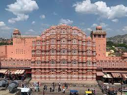

Jaipur Palaces
1. Rambagh palaces:
Located about 8 kms from the city centre of Jaipur, Rambagh Palace is one among the finest palaces of Jaipur. Once a residence of the Maharaja of Jaipur, today the palace has been converted into a luxury heritage resort with brilliant architecture, lighting and facilities. For visiting guests, day tours are offered
2. Amber Fort Palace:
Cradled on the top of the Aravali Hill and forming a beautiful reflection across the Maotha Lake, lies the Amber Fort. An architectural masterpiece and with significant reference in Indian history, it is visited by over five thousand tourists daily. The Fort gives a mesmerizing view from the bottom of the hill when it is illuminated every evening.
3. Hawa Mahal:

The Hawa Mahal stands at the intersection of the main road in Jaipur, Badi Chaupad. It is regarded as the signature palaces of Jaipur and was built by Maharaja Sawai Pratap Singh. Hawa Mahal derives its name from its unique structure, which is a mesh of small windows that allows cool wind to enter the palace and hence keeps the palace comfortable during the hot summer months.